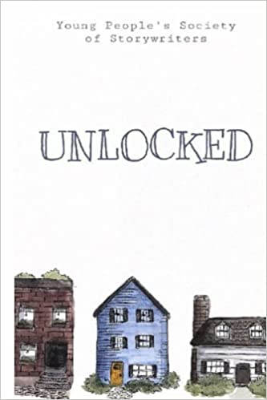

Meet Massachusetts Homeschoolers: Young People's Society of Storywriters
By Isabella Watkins
Homeschooling is ideal for the writing process. It not only gives you time to work on your craft, it also gives you the freedom to work with whomever you want. Writing with a group of friends who feel like family has helped my writing improve, and sharing my writing with supportive people has heightened my confidence in my work.
I belong to the Young People’s Society of Storywriters, a group of homeschooled teen writers and artists who meet weekly to write together. We published our debut anthology of short stories and poetry in November of 2021: Unlocked: An Anthology of Short Stories and Poetry.
Our group first assembled in 2017 when most of us were around 10, 11, or 12. The first class saw us gathered around a dining room table, with a mason jar of pencils presiding over it, in the home of one of the students in Cambridge, Massachusetts. We sat around the table with our writing mentor, Milva McDonald.
I was 10. It was my first year homeschooling, my first homeschool class. I had never known anyone my age who liked to write, and I had rarely let anyone read what I wrote. I was so nervous I thought I would dissolve into butterflies. What if no one here was actually a serious writer and they only came because their parents made them? Or, even worse, what if they are true, talented writers? Then how am I to compare?
It was soon obvious, through hearing what everyone wrote, that they were all real writers, and they all sat at that table by choice. And, from listening to their responses to each other’s writing, I realized they were all very kind. They were accepting, too, no matter what you wrote about, regardless of whether writing was an interest or a calling. In her novel Emma, Jane Austen uses the word imaginist
to describe creative thinkers, and I think that word sums us up pretty well.
My writing has transformed in the past five years. I’m not afraid to try new genres or ideas, or add messages meaningful to me, and I think that’s because I’ve spent so much time workshopping with smart, considerate people. Our teacher, Milva, is a stellar editor, and one who’s always willing to look at what we write outside of class, as well.
Our group met weekly in Cambridge, MA, until 2020,until COVID-19 hit. We had a couple more in-person meetings filled with hand sanitizer and wariness before the lockdown. We moved online, and our class expanded when we got a new member from Northern Wales.
In October 2020 Milva suggested that we compile some of our short stories and poems and publish them in an anthology. Over the next few weeks most of the people in our group added at least one story and a poem to a Google document she set up. Then we spent multiple months revising our writing. Three of our members illustrated several of the stories. Milva edited and provided feedback on our stories and poetry.
We had Zoom meetings outside of class to discuss which platform we were going to use for publishing, who was going to be in charge of formatting the book, and, most importantly, what we were going to name it. After several meetings, we finally settled everything in the early summer of 2021. We would publish on Kindle and Amazon, I would be in charge of formatting, and our book would be called Unlocked (derived from one of our title ideas, Stories Unlocked During Lockdown).
Amazon provides a formatting software called Kindle Create, but you have to apply a specific style guide to your manuscript before you can run it through Kindle Create. The process was really hard to understand, at first, but I found that it was a lot easier to fathom the formatting instructions once I actually began formatting. No one I knew had ever formatted a book, so I didn’t have anyone to give me help or advice when I couldn’t comprehend the instructions, or felt overwhelmed. It was very satisfying, when it stopped being frustrating, to learn a skill entirely on my own. And now I know how to format a book, and I hope to put that ability to use very often.
The experience of publishing a book together was edifying and fulfilling—and fun. We, the students, took the reins on this project, so we did most of the decision-making, research, and problem-solving. I went from never having had anyone read my writing, to reading it in class, to self-publishing it on Amazon.
The most rewarding part of the project was that I got to do it with my friends. We had a virtual potluck at the end of the summer in 2021 to celebrate our upcoming publication and to give an audience of our friends and family a preview of our writing. I was honored to organize and co-host with one of my friends from class, Caitlin. She and I decided to make a list of highlights from our time in class to read at the potluck. One of the things she wrote was:
The enthusiasm of our group when it comes to story writing and reading is truly uplifting and inspiring. It’s so wonderful to be friends with such talented writers. It makes you want to try harder, to experiment and to learn—as everyone else is doing.
Being in this group has inspired me to push myself, because, as Caitlin perfectly stated, that’s what everyone else is doing, and that’s what we’re here to do.
For five years our group has written together. I joined at 10—now I’m 15. We’re learning together and growing up together, and that’s very special, and such a joy. We’ve already decided that we’re going to have frequent writing class reunions, even if, at some point in the future, our class disbands while we pursue careers or college. We have one book on the Amazon shelves, and many more projects to come. We continue to meet over Zoom, to write, read, discuss, learn, and just be together.
Get your copy of Unlocked.
Isabella Watkins lives with her parents and black cat, Ginger. She has been homeschooling since 2017. When she isn’t writing, she loves cooking, painting, crafting, reading, and listening to Taylor Swift.